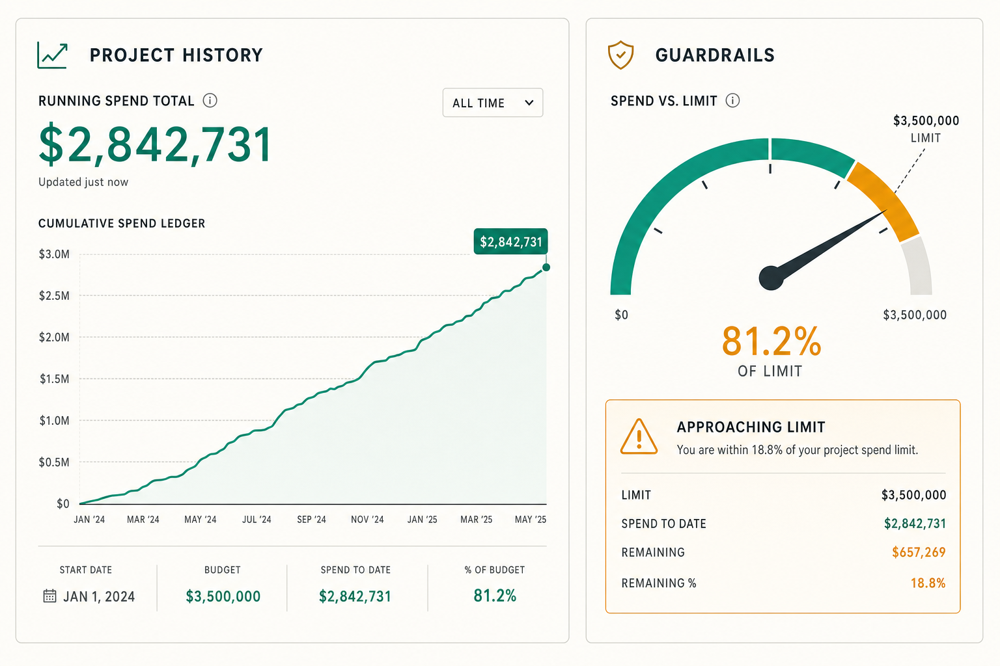
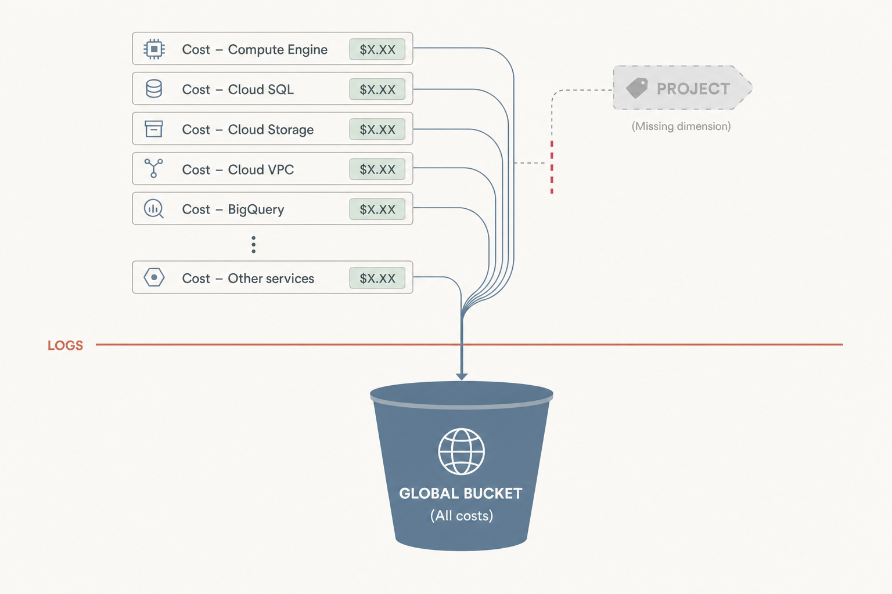
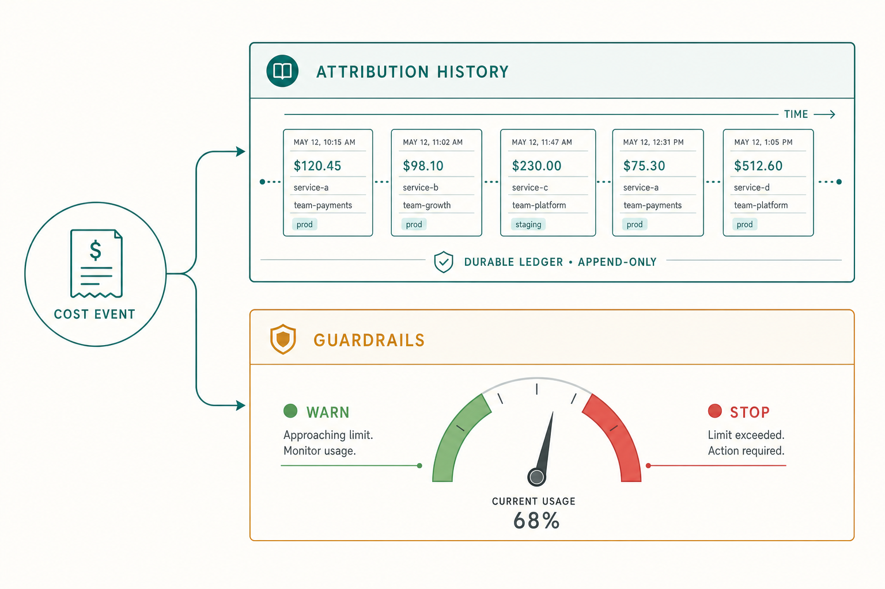
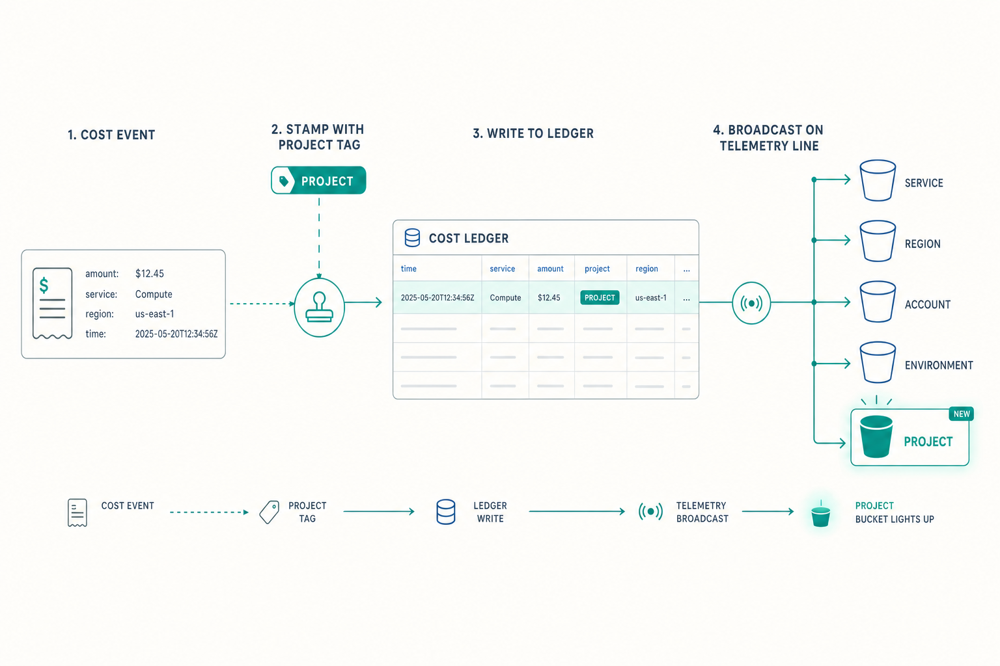
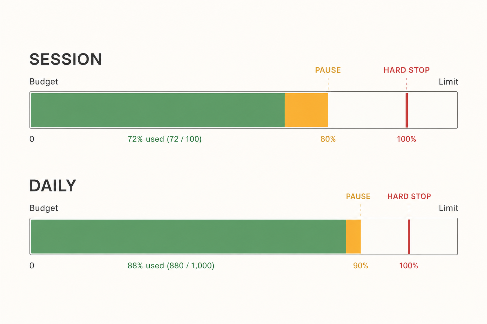
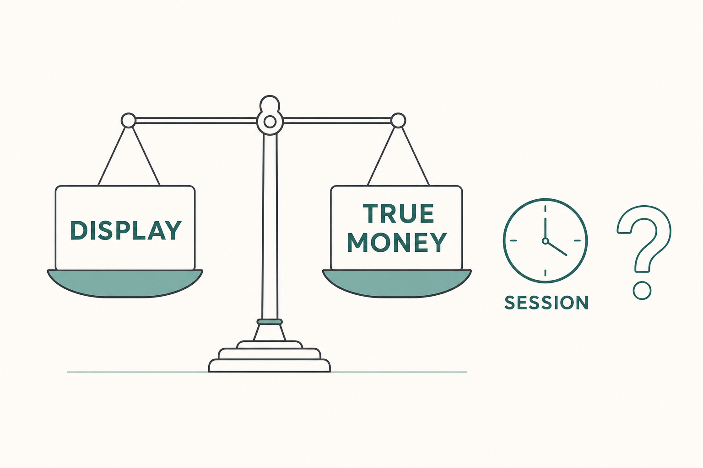

Per-Project Cost Tracking & Budget Guardrails
Make cost a first-class property of a project: attribute every dollar to the project that spent it, give the operator a full per-project spend history they can clear and restore, and replace the single global alert threshold with session & daily guardrails that stop a build before it runs away.

Purpose
When a repository is built with AI, the spend belongs to that project — there is a complete cost history for the work, from first plan to last commit. Today the platform records cost by harness/provider/model and by global/orchestrator/workflow scope, but not by project, and the only ceiling is one global dollar threshold that merely logs a warning. This plan reframes cost around the project: per-project history (with clear/restore), genuinely useful reporting, and session/daily budget guardrails so the operator cannot accidentally go overboard in a sitting or a day.
Problem
The cost subsystem is well-factored but project-blind, and its only guardrail is the wrong shape:
- No project attribution. Cost lives in
agent_logs.usage.cost_usd, butagent_logshas noproject_id.CostCenter.scope_spend/3andBudget.Scopeonly know:global,:orchestrator,:workflow— there is no:projectscope. So "what did this project cost?" is unanswerable from the ledger. - Clear is global, not per-project. The console CLEAR action soft-hides rows via
agent_logs.hiddenacross the board (or by agent); there is no way to clear or restore the pricing for one project. - Reporting is vendor-shaped, not project-shaped.
spend_summary_tableshows today/week/month folded by harness/provider; useful for vendor accounting, useless for "how much has Project X consumed over its lifetime." - The "overall alerting" doesn't make sense.
Telemetry.Alertinglogs a warning when a single recorded amount exceeds one global:cost_threshold_usd. A platform-wide threshold can't protect a single project's budget and can't stop a runaway sitting.Project.budget_cap_usdalready exists but is only checked at plan time inPlanningLive— never enforced live byBudget.Guard.

Solution
Split the redesign along the two axes the user actually described, and reuse the existing seams rather than rebuild them. All cost already funnels through one telemetry event [:repo_builder, :cost, :recorded] and one durable ledger (agent_logs) — we add a project dimension to both, then layer reporting and guardrails on top.
| Axis | What it answers | Lifetime | Mechanism |
|---|---|---|---|
| A — Attribution & History durable | "How much has this project cost, all-time, by model?" | Never resets; full project history. Clear = soft-hide; Restore = reveal. | project_id on agent_logs + CostCenter.project_spend/2 + per-project clear/restore. |
| B — Guardrails windowed | "Am I about to overspend in this sitting / today?" | Resets per session and per day; warn → pause → hard-stop. | New :project scope + :session/:daily periods enforced live by Budget.Guard, seeded from Project.budget_cap_usd. Retire the legacy global alert. |
Concretely:
- Stamp the project onto cost. Add a nullable
project_idtoagent_logs(and into the cost telemetry metadata), resolved from the bound orchestrator/agent at write time. Add:projecttoBudget.Scopeand ascope_spend(:project, id, …)clause. - Report per project.
CostCenter.project_spend/2returns lifetime total + by-model rollup + first/last activity;project_period_spend/2returns session/today/week windows. Surface both in a per-project Cost panel. - Clear & restore per project.
Logs.hide_logs_for_project/1andrelease_hidden_logs_for_project/1with explicit UI buttons; the display total honors the hidden flag while the true-money total remains recoverable. - Guardrails replace the global alert. Wire
Project.budget_cap_usdintoBudget.Guardas a live:project/:totalcap; add operator-set:sessionand:dailycaps; retireTelemetry.Alerting's global threshold (fold it into a seeded Budget cap).

Relevant Files
Existing Files
- existing
lib/repo_builder/logs/agent_log.ex— durable cost ledger row (hasusage,hidden; needsproject_id). - existing
lib/repo_builder/logs.ex— persistence + hide/reveal API (hide_all_logs,release_hidden_logs,hide_logs_for_agents); add project-scoped variants and project stamping inpersist_event/2/persist_orchestrator_event/2. - existing
lib/repo_builder/cost_center.ex— rates + actuals rollup; add:projecttoscope_spend/3and newproject_spend/2/project_period_spend/2. - existing
lib/repo_builder/cost_center/spend_summary.ex—SpendRow/SpendSummarystructs; add a project report struct (or reuse). - existing
lib/repo_builder/budget/scope.ex— scope vocabulary; add:projectmember. - existing
lib/repo_builder/budget/cap.ex—budgetsschema; add:sessionperiod and allow:projectscope. - existing
lib/repo_builder/budget/guard.ex— live circuit breaker; enforce:projectcaps + session/daily windows; resolve project from cost metadata. - existing
lib/repo_builder/budget.ex— caps CRUD +seed_default_cap/0; add session-reset + project-cap seeding fromProject.budget_cap_usd. - existing
lib/repo_builder/telemetry/alerting.ex— legacy global threshold to retire/fold into Budget. - existing
lib/repo_builder/orchestrator.ex&lib/repo_builder/orchestrator/server.ex— emit the cost event; addproject_idto metadata. - existing
lib/repo_builder/workflows.ex—add_run_cost/2emits the cost event for ADW runs; addproject_idto metadata. - existing
lib/repo_builder/projects/project.ex— hasbudget_cap_usd; the source of the live project cap. - existing
lib/repo_builder_web/live/console_live.ex— Cost Center + Budget assigns/handlers; add per-project panel + clear/restore + session controls. - existing
lib/repo_builder_web/components/console_components.ex— cost/budget markup; add project cost panel + session/daily gauges. - existing
lib/repo_builder_web/live/planning_live.ex— already readsproject.budget_cap_usdat plan time; align with the now-live cap. - existing
config/config.exs—:alerting+:budgetconfig to reconcile.
New Files
- new
priv/repo/migrations/<ts>_add_project_id_to_agent_logs.exs— nullableproject_idFK (nilify_all) + index onagent_logs. - new
priv/repo/migrations/<ts>_add_session_period_and_project_scope_to_budgets.exs— extend cap enum guards if DB-enforced; add any session-window columns needed. - new
lib/repo_builder/cost_center/project_report.ex— TypedStruct for a per-project cost report (lifetime total, by-model rows, session/today/week, first/last used, hidden total). - new
test/repo_builder/cost_center_project_spend_test.exs— attribution + project rollup + clear/restore accounting. - new
test/repo_builder/budget/guard_project_guardrails_test.exs— session/daily/project cap warn→pause→hard-stop. - new
test/repo_builder_web/live/console_project_cost_test.exs— LiveView: panel renders, CLEAR/RESTORE, session reset.
Implementation Phases
IMPORTANT: Execute every phase and task step by step, in order, top to bottom.
Status markers: [] idle · [wip] in progress · [x] complete · [f] failed. All start as []; the Build Plan workflow updates them as it works.
[] Phase 1: Project Cost Attribution (data foundation)
Make cost attributable to a project. Add project_id to the durable ledger and to the cost telemetry metadata, resolved from the bound orchestrator/agent at write time, and teach the existing scope machinery about :project. Nothing user-visible yet — this is the seam everything else stands on.

1. Migration: project_id on agent_logs
[]Add migration adding nullableproject_id(references(:projects, type: :binary_id, on_delete: :nilify_all)) + index, mirroring theagents/workflow_runspattern in20260623000001_create_projects_and_scope.exs.[]Decide on historical backfill: leave pre-existing rowsNULL(unscoped) — document this; do NOT block on a heavy backfill.
2. Schema + persistence stamping
[]Addfield :project_id, :binary_idtoLogs.AgentLogschema, typespec, and changeset cast.[]Resolve the active project at write time inLogs.persist_event/2andpersist_orchestrator_event/2(from the agent's / orchestrator's boundproject_id); stamp it onto the row.[]Addproject_idto the[:repo_builder, :cost, :recorded]metadata inOrchestrator.emit_cost_recorded/2andWorkflows.add_run_cost/2.
3. Scope vocabulary
[]Add:projecttoBudget.Scope(scopes_for/1, validation) without breaking existing:global/:orchestrator/:workflow.[]Add ascope_spend(:project, project_id, opts)clause toCostCenterthat filters the rollup byagent_logs.project_id.
4. Testing Strategy
ExUnit with the existing DataCase/sandbox. Prove a persisted cost row carries the bound project, that scope_spend(:project, …) isolates one project's spend from another's, and that unscoped (NULL) rows are excluded from a project total but still counted globally.
[]mix ecto.migrate && mix ecto.rollback && mix ecto.migrate— migration is reversible.[]mix test test/repo_builder/cost_center_project_spend_test.exs— attribution + project isolation pass.[]mix compile --warnings-as-errors— typespecs/changeset clean.
[] Phase 2: Per-Project Reporting & Lifetime History
Turn the new attribution into the reporting the operator actually wants: a project's full-lifetime spend, broken down by model, plus session/today/week windows — surfaced in a per-project Cost panel.
1. Context API
[]AddCostCenter.project_spend/2→ lifetime total (actual + estimated, est? flagged), by-(harness,provider,model) rows, event count, first/last used.[]AddCostCenter.project_period_spend/2→ session/today/week/month windows for one project (reuseTimezones.period_starts/2; add a session-start input).[]AddCostCenter.ProjectReportTypedStruct and have the context return it (keep nil-vs-0 cost discipline).
2. UI: per-project Cost panel
[]Add aproject_cost_panel/1component (lifetime total headline, by-model table, period strip) inconsole_components.ex, styled to the existing Cost Center identity.[]Wire assigns inconsole_live.ex: load the active project's report on project switch (reuse the existing project-switch refresh seam) and on the Cost Center tab.[]Show the active project's lifetime total in the header cost pill context (so the operator always sees "this project so far").
3. Testing Strategy
LiveViewTest for rendering + context tests for the math. Cover the empty-project case (no spend yet), an estimated-only project (unpriced harness → ~$ band, never $0), and by-model ordering.
[]mix test test/repo_builder/cost_center_project_spend_test.exs— lifetime + period math correct.[]mix test test/repo_builder_web/live/console_project_cost_test.exs— panel renders totals + by-model rows.[]mix format --check-formatted && mix credo --strict— style + @spec gate clean.
[] Phase 3: Clear & Restore Pricing Per Project
Give the operator a per-project CLEAR (soft-hide this project's cost rows) and RESTORE (reveal them), reusing the existing agent_logs.hidden soft-delete so cleared money is never destroyed — only hidden from the project's display total and recoverable.
1. Context API
[]AddLogs.hide_logs_for_project/1andLogs.release_hidden_logs_for_project/1(mirrorhide_logs_for_agents/1/release_hidden_logs/0, filtered byproject_id).[]Makeproject_spend/2honor an:include_hidden?option so the panel can show both a display total (hidden excluded) and a true-money total (hidden included) — see Questionables.
2. UI: clear / restore controls
[]Add "Clear project costs" + "Restore" buttons to the project cost panel with a confirm step; wireclear_project_costs/restore_project_costsevents inconsole_live.ex.[]After clear/restore, refresh the report and flash the count of rows affected; show a subtle "N cleared (restorable)" marker when hidden rows exist.
3. Testing Strategy
Context + LiveViewTest. Prove clear hides only the target project's rows (not other projects'), the display total drops while the true-money total is unchanged, and restore is exact and idempotent.
[]mix test test/repo_builder/cost_center_project_spend_test.exs— clear/restore accounting + project isolation.[]mix test test/repo_builder_web/live/console_project_cost_test.exs— buttons clear/restore and refresh the panel.[]mix compile --warnings-as-errors— clean.
[] Phase 4: Session & Daily Budget Guardrails (retire the global alert)
Replace the single global log-only threshold with guardrails that actually stop overspend: a live per-project total cap (from Project.budget_cap_usd), plus operator-set session and daily caps with warn → pause → hard-stop. Fold the legacy alert into a seeded Budget cap and retire Telemetry.Alerting's global path.

1. Cap model: project scope + session period
[]Allowscope: :projectwithscope_id = project_idinBudget.Cap; add a:sessionperiod alongside:daily/:monthly/:total.[]Define "session" explicitly: an operator-controlled window keyed off areset_atthe operator sets via a "Start session" / "Reset session" control (see Questionables). Addwindow_start/1handling for:sessioninBudget.Guard.[]Migration for any new column/enum value if the period/scope is DB-constrained.
2. Live enforcement in Budget.Guard
[]InBudget.Guard.handle_cost_event/4, resolveproject_idfrom the cost metadata and accumulate against project/session/daily caps (in addition to existing scopes).[]Seed a live project cap fromProject.budget_cap_usd(replace the plan-time-only check inPlanningLivewith the live cap; keep a plan-time pre-check that reads the same cap).[]Honoraction(:alert/:pause/:hard_stop) for project/session/daily caps, broadcasting:budget_warning/:budget_trippedon"budget:events"with project context;:hard_stopinterrupts in-scope sessions.
3. Retire / reconcile legacy alerting
[]ReplaceTelemetry.Alerting's global:cost_threshold_usdpath: either remove the cost-threshold handler (keep the Oban exception handler) or convert it to a seeded global:alertcap so there's one alerting mechanism (Budget), not two.[]Updateconfig/config.exs(:alerting/:budget) andBudget.seed_default_cap/0accordingly; document the migration of the old threshold.
4. UI: session/daily controls + gauges
[]Add session + daily cap inputs and a "Reset session" button to the budget panel (scoped to the active project); render warn/pause/stop gauges reusing the existing budget bar styling.[]Surface a banner/badge when a session or daily cap is in warning or tripped, distinct from the global kill switch.
5. Testing Strategy
Guard-focused ExUnit (drive synthetic cost events) + LiveViewTest. Cover: project cap from budget_cap_usd trips at limit; session cap resets on "Reset session"; daily cap rolls at midnight; warn_ratio fires warning before the cap; :hard_stop interrupts; Guard fails open if unavailable.
[]mix test test/repo_builder/budget/guard_project_guardrails_test.exs— warn→pause→hard-stop across project/session/daily.[]mix test test/repo_builder_web/live/console_project_cost_test.exs— session reset + gauge + banner.[]mix test --warnings-as-errors— full suite green (no regressions in existing budget tests).
Validation Commands
Execute these commands to validate the entire plan is complete:
[]mix ecto.migrate— all new migrations apply cleanly.[]mix compile --warnings-as-errors— zero warnings.[]mix format --check-formatted— formatted.[]mix credo --strict— @spec gate + style clean.[]mix test --warnings-as-errors— full suite green (incl. new attribution, clear/restore, guardrail tests).[]mix dialyzer— no new typing errors (pre-existing skips unchanged).[]Manual: build a project, watch its lifetime total climb, CLEAR then RESTORE it, set a tiny session cap and confirm warn→pause→hard-stop fires before overspend.
Questionables

What exactly is a "session" budget window?
Assumption: a session is an operator-controlled window, not a tech session. It starts at a reset_at the operator sets with a "Start/Reset session" button (one sitting). This is simpler and more useful than tying it to a LiveView connection (which churns on reconnect) or an orchestrator run (too granular). Daily handles the calendar-day guardrail; session handles "this sitting." Open to instead define session as "since app/console connect," if the operator prefers zero-click.
Should per-project CLEAR change the real-money total, or only the display?
Assumption: CLEAR only hides rows (soft-delete), exactly like the existing console CLEAR — real money is never destroyed. The panel shows a display total (hidden excluded) for a clean slate, plus an unobtrusive "N cleared (restorable)" marker and an :include_hidden? true-money total available on demand. Note the existing period_spend deliberately includes hidden rows ("real money"); we keep that for vendor accounting and only diverge for the project display total. Confirm this dual-total is acceptable vs. a single number.
Project cap vs. session/daily cap precedence?
Assumption: all applicable caps are evaluated; the most restrictive wins for the action taken (hard-stop > pause > alert). A project's lifetime budget_cap_usd (period :total) and its session/daily caps coexist. Confirm whether session/daily caps are per-project or global-per-operator (plan assumes per-active-project, with an optional global fallback).
Backfill historical agent_logs with project_id?
Assumption: no heavy backfill. Pre-existing rows stay NULL (unscoped) and simply don't appear in any project's history — they remain in global/vendor totals. If recovering historical project attribution matters, a best-effort backfill via agents.project_id/workflow_runs.project_id join could be a follow-up, but it's lossy for orchestrator rows predating binding.
Fully remove Telemetry.Alerting's cost path, or convert it?
Assumption: convert, don't delete. Fold the global :cost_threshold_usd into a seeded global :alert Budget cap so there is exactly one alerting mechanism. Keep Telemetry.Alerting's Oban-exception handler (unrelated to cost). This avoids a behavior gap on upgrade while removing the "doesn't make sense" duplicate.
Notes
Why this is mostly additive
The cost subsystem is already cleanly factored into CostCenter (rates + actuals), Budget (caps + live Budget.Guard breaker), and the legacy Telemetry.Alerting. Everything funnels through one telemetry event [:repo_builder, :cost, :recorded] and one durable ledger (agent_logs). The two structural gaps are narrow: (1) agent_logs lacks project_id; (2) Budget.Scope lacks :project. Almost everything else is new query clauses, a struct, UI, and one cap-period addition — low blast radius.
The single seam to get right
Resolving project_id at cost-write time. Orchestrators are project-bound (see specs/orchestrator-project-binding-and-pinned-workers.html) and agents already carry project_id. The persist path (Logs.persist_event/2 / persist_orchestrator_event/2) is the one place to resolve and stamp it; the telemetry metadata is the one place Budget.Guard reads it for live enforcement. Get both stamped in Phase 1 and the rest is layering.
Two totals, one truth
Cost discipline to preserve
Keep the existing nil-vs-0 rule: unpriced models report cost_usd = NULL (estimated band ~$…), never $0. CostCenter and the cost_badge already encode this; project reports and gauges must too, so an unpriced harness (e.g. pi) never looks free.
Dependencies / risks
- No new libraries — TypedStruct, Ecto, Phoenix LiveView are already in use.
Budget.Guardis a singleton GenServer on the hot path; keep accumulation O(caps) and continue to fail open if it's down so cost recording never blocks a build.- Timezone consistency: the display summary uses operator-tz windows while the Guard uses UTC windows — align session/daily project windows to one convention (plan favors operator-tz for display, UTC for enforcement, documented).
Amendments
No amendments yet — populated by the Update Plan / Update References workflows after first execution.